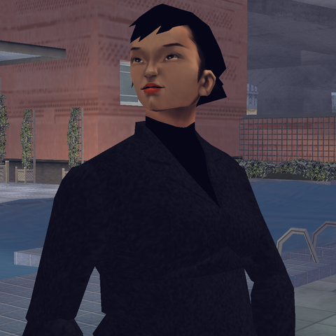
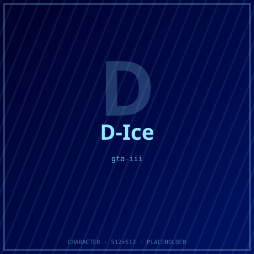
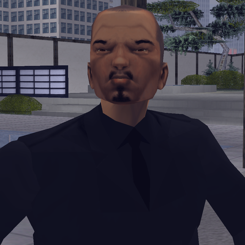
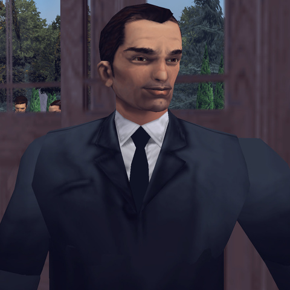
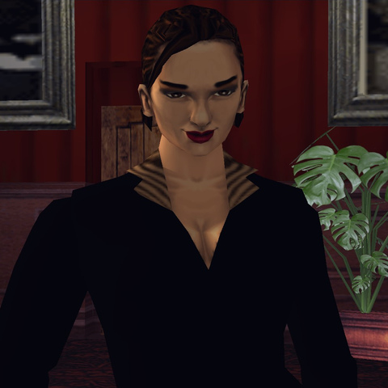
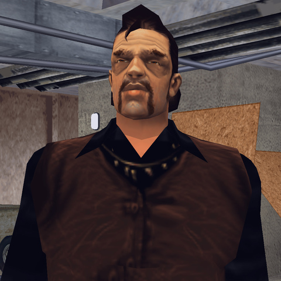
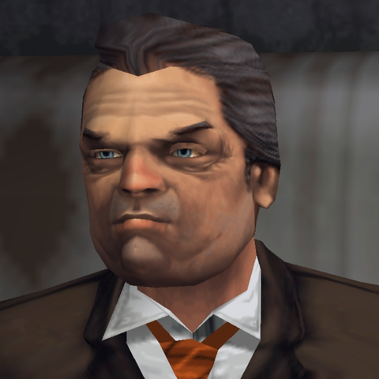
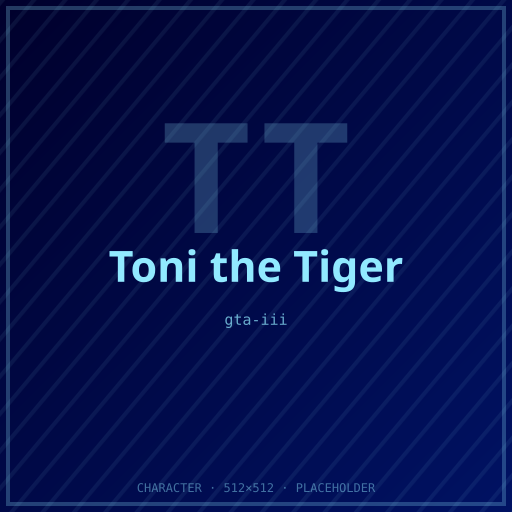

GTA III
Characters
 8-Ball
8-Ball
Asuka Kasen Catalina
Catalina Claude
Claude
D-Ice Donald Love
Donald Love El Burro
El Burro Joey Leone
Joey Leone
Kenji Kasen King Courtney
King Courtney
Luigi Goterelli
Maria Latore Marty Chonks
Marty Chonks
Miguel Phil Cassidy
Phil Cassidy
Ray Machowski Salvatore Leone
Salvatore Leone Toni Cipriani
Toni Cipriani
Toni the Tiger
| Image | Name | Role | Affiliations | Status |
|---|---|---|---|---|
| 8-Ball | Explosives expert, first ally | Liberty City underworld, Leone Crime Family | Alive |
| Asuka Kasen | Yakuza co-leader | Yakuza | Deceased | |
| Catalina | Antagonist, Colombian Cartel | Colombian Cartel | Deceased |
| Claude | Protagonist | Independent, Leone Crime Family (associate), Yakuza (associate) | Alive |
| D-Ice | Red Jacks leader | Red Jacks | Alive | |
| Donald Love | Media mogul | Love Media | Alive |
| El Burro | Diablos leader | Diablos | Alive |
| Joey Leone | Garage owner, Leone capo | Leone Crime Family | Alive |
| Kenji Kasen | Yakuza co-leader | Yakuza | Deceased | |
| King Courtney | Yardies leader | Yardies | Alive |
| Luigi Goterelli | Strip club owner, Leone capo | Leone Crime Family | Alive | |
| Maria Latore | Salvatore's girlfriend | Leone Crime Family | Alive | |
| Marty Chonks | Cannibal business owner | Bitch'n' Dog Food | Deceased |
| Miguel | Cartel lieutenant | Colombian Cartel | Deceased | |
| Phil Cassidy | Gun runner | Liberty City underworld | Alive |
| Ray Machowski | Corrupt LCPD detective | Liberty City Police Department, Yakuza | Alive | |
| Salvatore Leone | Don of the Leone family | Leone Crime Family | Alive |
| Toni Cipriani | Leone capo | Leone Crime Family | Alive |
| Toni the Tiger | Triad enforcer | Liberty City Triads | Alive |